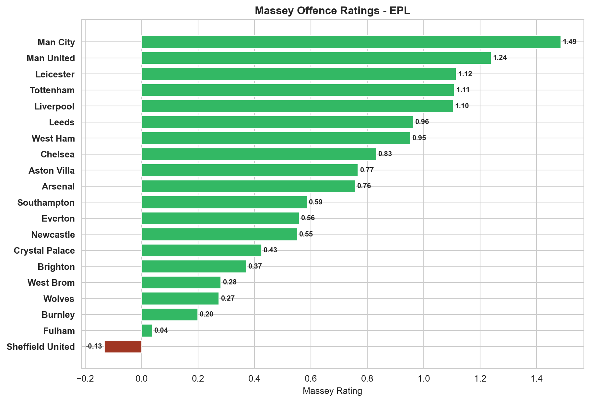

Massey Ratings#
Massey Ratings provide a mathematically robust method for evaluating and ranking football teams based on their match results.
The Massey Rating system considers the strength of each team’s opponents and the margins of victory or defeat, resulting in ratings that accurately reflect relative team performance.
This makes it particularly useful for predicting outcomes, comparing team quality across leagues, and informing betting decisions by identifying teams whose performance might be underrated or overrated by bookmakers.
[1]:
import penaltyblog as pb
[2]:
fbd = pb.scrapers.FootballData("ENG Premier League", "2020-2021")
df = fbd.get_fixtures()
df.head()
[2]:
| date | datetime | season | competition | div | time | team_home | team_away | fthg | ftag | ... | b365_cahh | b365_caha | pcahh | pcaha | max_cahh | max_caha | avg_cahh | avg_caha | goals_home | goals_away | |
|---|---|---|---|---|---|---|---|---|---|---|---|---|---|---|---|---|---|---|---|---|---|
| id | |||||||||||||||||||||
| 1599868800---crystal_palace---southampton | 2020-09-12 | 2020-09-12 15:00:00 | 2020-2021 | ENG Premier League | E0 | 15:00 | Crystal Palace | Southampton | 1 | 0 | ... | 1.78 | 2.13 | 1.79 | 2.17 | 1.85 | 2.18 | 1.79 | 2.12 | 1 | 0 |
| 1599868800---fulham---arsenal | 2020-09-12 | 2020-09-12 12:30:00 | 2020-2021 | ENG Premier League | E0 | 12:30 | Fulham | Arsenal | 0 | 3 | ... | 2.01 | 1.89 | 2.02 | 1.91 | 2.13 | 1.92 | 2.02 | 1.87 | 0 | 3 |
| 1599868800---liverpool---leeds | 2020-09-12 | 2020-09-12 17:30:00 | 2020-2021 | ENG Premier League | E0 | 17:30 | Liverpool | Leeds | 4 | 3 | ... | 1.85 | 2.05 | 1.85 | 2.08 | 1.90 | 2.16 | 1.84 | 2.04 | 4 | 3 |
| 1599868800---west_ham---newcastle | 2020-09-12 | 2020-09-12 20:00:00 | 2020-2021 | ENG Premier League | E0 | 20:00 | West Ham | Newcastle | 0 | 2 | ... | 2.03 | 1.87 | 2.04 | 1.88 | 2.09 | 1.91 | 2.02 | 1.86 | 0 | 2 |
| 1599955200---tottenham---everton | 2020-09-13 | 2020-09-13 16:30:00 | 2020-2021 | ENG Premier League | E0 | 16:30 | Tottenham | Everton | 0 | 1 | ... | 2.09 | 1.81 | 2.09 | 1.85 | 2.16 | 1.86 | 2.08 | 1.81 | 0 | 1 |
5 rows × 111 columns
[3]:
massey = pb.ratings.Massey(
df["goals_home"], df["goals_away"], df["team_home"], df["team_away"]
)
massey.get_ratings()
[3]:
| team | rating | offence | defence | |
|---|---|---|---|---|
| 0 | Man City | 1.275 | 1.486184 | -0.211184 |
| 1 | Man United | 0.725 | 1.238962 | -0.513962 |
| 2 | Liverpool | 0.65 | 1.10424 | -0.45424 |
| 3 | Tottenham | 0.575 | 1.108406 | -0.533406 |
| 4 | Chelsea | 0.55 | 0.832018 | -0.282018 |
| 5 | Leicester | 0.45 | 1.115351 | -0.665351 |
| 6 | Arsenal | 0.4 | 0.757018 | -0.357018 |
| 7 | West Ham | 0.375 | 0.952851 | -0.577851 |
| 8 | Aston Villa | 0.225 | 0.76674 | -0.54174 |
| 9 | Leeds | 0.2 | 0.962573 | -0.762573 |
| 10 | Everton | -0.025 | 0.558406 | -0.583406 |
| 11 | Brighton | -0.15 | 0.370906 | -0.520906 |
| 12 | Newcastle | -0.4 | 0.551462 | -0.951462 |
| 13 | Wolves | -0.4 | 0.273684 | -0.673684 |
| 14 | Southampton | -0.525 | 0.586184 | -1.111184 |
| 15 | Burnley | -0.55 | 0.198684 | -0.748684 |
| 16 | Crystal Palace | -0.625 | 0.425073 | -1.050073 |
| 17 | Fulham | -0.65 | 0.037573 | -0.687573 |
| 18 | West Brom | -1.025 | 0.280629 | -1.305629 |
| 19 | Sheffield United | -1.075 | -0.13326 | -0.94174 |
[4]:
import matplotlib.pyplot as plt
import numpy as np
import seaborn as sns
%config InlineBackend.figure_format='retina'
plt.rcParams["figure.figsize"] = [10, 7]
sns.set_style("whitegrid")
massey = pb.ratings.Massey(
df["goals_home"], df["goals_away"], df["team_home"], df["team_away"]
)
ratings = massey.get_ratings()
ratings["colours"] = np.where(ratings["rating"] > 0, "#33b864", "#a03623")
fig, ax = plt.subplots()
y_pos = np.arange(len(ratings))
performance = ratings["rating"]
ax.barh(y_pos, performance, align="center", color=ratings["colours"])
ax.set_yticks(y_pos)
ax.set_yticklabels(ratings["team"], fontweight="bold")
ax.invert_yaxis()
ax.set_xlabel("Massey Rating")
ax.set_title("Massey Ratings - EPL", fontweight="bold")
rects = ax.patches
for rect in rects:
x_value = rect.get_width()
y_value = rect.get_y() + rect.get_height() / 2
space = 2
ha = "left"
if x_value < 0:
space *= -1
ha = "right"
label = "{:.2f}".format(x_value)
# Create annotation
plt.annotate(
label,
(x_value, y_value),
xytext=(space, 0),
textcoords="offset points",
va="center",
ha=ha,
fontsize=8,
fontweight="bold",
)

[5]:
import matplotlib.pyplot as plt
import numpy as np
import seaborn as sns
%config InlineBackend.figure_format='retina'
plt.rcParams["figure.figsize"] = [10, 7]
sns.set_style("whitegrid")
massey = pb.ratings.Massey(
df["goals_home"], df["goals_away"], df["team_home"], df["team_away"]
)
ratings = massey.get_ratings()
ratings["colours"] = np.where(ratings["offence"] > 0, "#33b864", "#a03623")
ratings = ratings.sort_values("offence", ascending=False)
fig, ax = plt.subplots()
y_pos = np.arange(len(ratings))
performance = ratings["offence"]
ax.barh(y_pos, performance, align="center", color=ratings["colours"])
ax.set_yticks(y_pos)
ax.set_yticklabels(ratings["team"], fontweight="bold")
ax.invert_yaxis()
ax.set_xlabel("Massey Rating")
ax.set_title("Massey Offence Ratings - EPL", fontweight="bold")
rects = ax.patches
for rect in rects:
x_value = rect.get_width()
y_value = rect.get_y() + rect.get_height() / 2
space = 2
ha = "left"
if x_value < 0:
space *= -1
ha = "right"
label = "{:.2f}".format(x_value)
# Create annotation
plt.annotate(
label,
(x_value, y_value),
xytext=(space, 0),
textcoords="offset points",
va="center",
ha=ha,
fontsize=8,
fontweight="bold",
)

[6]:
import matplotlib.pyplot as plt
import numpy as np
import seaborn as sns
%config InlineBackend.figure_format='retina'
plt.rcParams["figure.figsize"] = [10, 7]
sns.set_style("whitegrid")
ratings = pb.massey.ratings(
df["goals_home"], df["goals_away"], df["team_home"], df["team_away"]
)
ratings["colours"] = np.where(ratings["defence"] > 0, "#33b864", "#a03623")
ratings = ratings.sort_values("defence", ascending=False)
fig, ax = plt.subplots()
y_pos = np.arange(len(ratings))
performance = ratings["defence"]
ax.barh(y_pos, performance, align="center", color=ratings["colours"])
ax.set_yticks(y_pos)
ax.set_yticklabels(ratings["team"], fontweight="bold")
ax.invert_yaxis()
ax.set_xlabel("Massey Rating")
ax.set_title("Massey Defence Ratings - EPL", fontweight="bold")
rects = ax.patches
for rect in rects:
x_value = rect.get_width()
y_value = rect.get_y() + rect.get_height() / 2
space = 2
ha = "left"
if x_value < 0:
space *= -1
ha = "right"
label = "{:.2f}".format(x_value)
plt.annotate(
label,
(x_value, y_value),
xytext=(space, 0),
textcoords="offset points",
va="center",
ha=ha,
fontsize=8,
fontweight="bold",
)
---------------------------------------------------------------------------
AttributeError Traceback (most recent call last)
Input In [6], in <cell line: 0>()
6 plt.rcParams["figure.figsize"] = [10, 7]
7 sns.set_style("whitegrid")
----> 9 ratings = pb.massey.ratings(df["goals_home"], df["goals_away"], df["team_home"], df["team_away"])
10 ratings["colours"] = np.where(ratings["defence"] > 0, "#33b864", "#a03623")
11 ratings = ratings.sort_values("defence", ascending=False)
AttributeError: module 'penaltyblog' has no attribute 'massey'